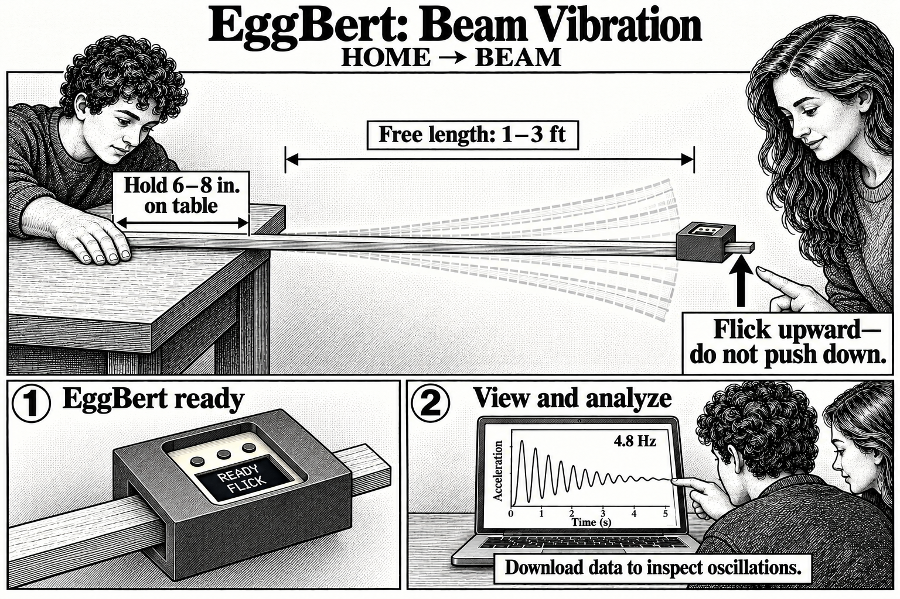

Beam Vibration
One student holds the beam firmly against the table while the other operates EggBert. The free length can be one to three feet. Press the middle button to arm, then hold still until READY appears. Flick the free end upward to start the 15-second recording at 480 samples per second.
When finished, EggBert shows an estimated vibration frequency, or NO CLEAR PERIOD if it cannot identify a repeating signal. Connect to the Capture Viewer to download and inspect the recording. MID OPT opens the erase options; download before erasing to run another trial. While waiting for a flick, the middle button cancels arming.
